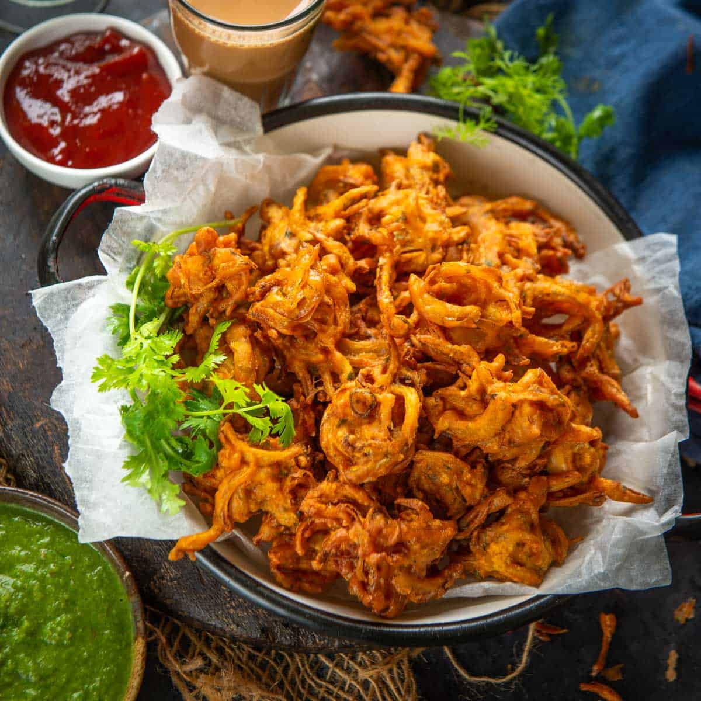
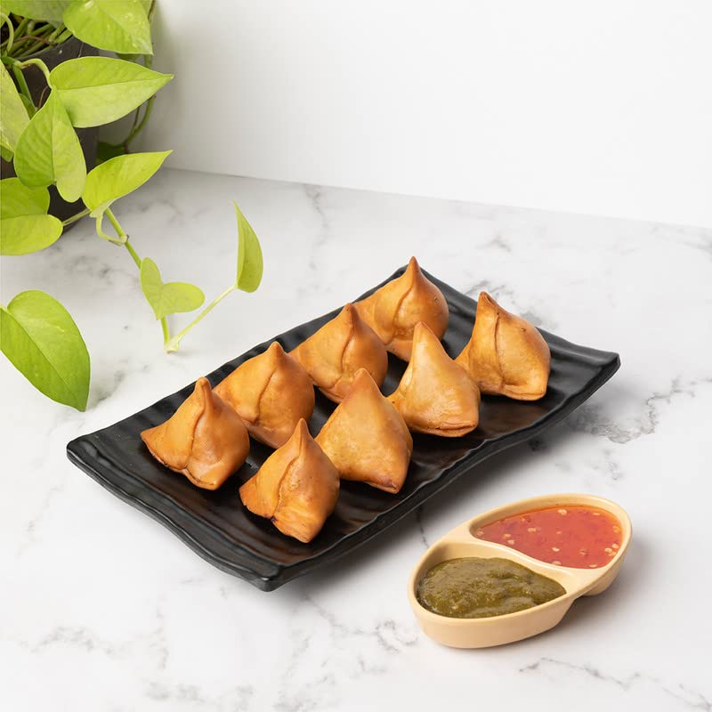
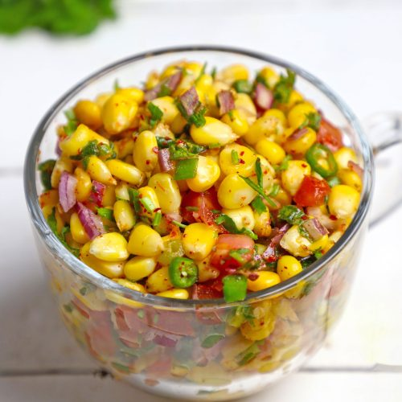
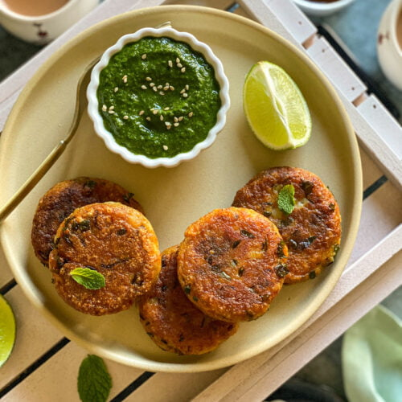

Anytime Munchies (Snacks)
Snacks, starters, and party bites

Onion Pakoras
Ingredients :
- 1 medium onion, thinly sliced
- 1/2 cup chickpea flour (besan)
- 1/4 tsp turmeric powder
- 1/2 tsp red chili powder
- Water (enough to make a thick batter)
- Oil for deep frying
- Salt to taste
Making Process :
- Mix chickpea flour, turmeric, chili powder, salt.
- Add water little by little to make a thick batter.
- Add sliced onions and mix well.
- Heat oil in a deep pan. Drop spoonfuls of batter into hot oil.
- Fry until golden and crisp. Drain on paper towel. Serve hot.

Mini Samosas
Ingredients :
- 4 small samosa pastry sheets or 1/2 cup all-purpose flour dough
- 1/2 cup boiled and mashed potatoes
- 1 tbsp peas (optional)
- 1/2 tsp cumin seeds
- 1/2 tsp garam masala
- Salt to taste
- Salt to taste
Making Process :
- Heat oil, add cumin seeds, peas, and mashed potatoes, garam masala, salt. Cook 3 min. Cool.
- Roll dough into thin circles, cut into halves, fold into cones.
- Fill cones with potato mixture, seal edges with water
- Deep fry in hot oil till golden. Serve hot.

Corn Chaat
Ingredients :
- 1 cup boiled corn kernels
- 1 small onion, finely chopped
- 1 small tomato, finely chopped
- 1 green chili, chopped (optional)
- 1 tbsp coriander leaves, chopped
- 1 tsp chaat masala
- 1 tbsp lemon juice
- Salt to taste
- In a bowl, combine corn, onion, tomato, chili, coriander.
- Add chaat masala, salt, and lemon juice. Mix well.
- Serve immediately as a tangy snack.

Aloo Tikki
Ingredients :
- 2 medium boiled potatoes, mashed
- 1 small onion, finely chopped
- 1 green chili, chopped
- 1/4 tsp red chili powder
- 1/4 tsp garam masala
- 1/2 tsp turmeric powder
- 1 tsp coriander powder
- 1/2 tsp chili powder
- 1/2 tsp garam masala
- Salt to taste
- 1-2 tbsp oil for shallow frying
Making Process :
- Mix mashed potatoes with onion, chili, red chili powder, garam masala, and salt.
- Shape into small flat patties.
- Heat oil in a pan and shallow fry patties till golden brown on both sides.
- Serve hot with chutney.